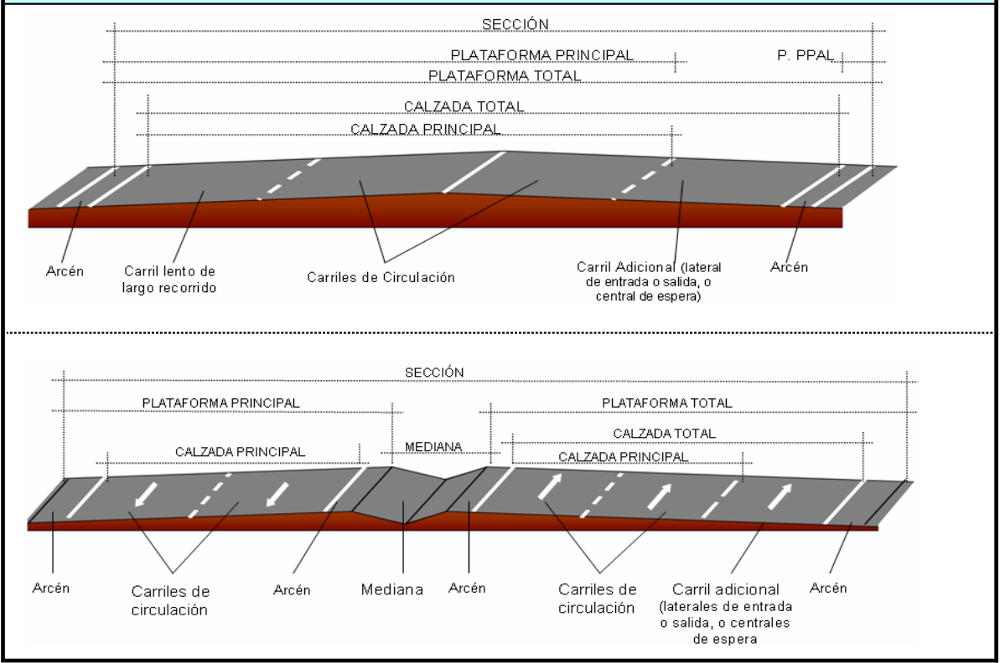

6. Diseño de la sección transversal¶
El elemento más importante de la sección transversal de una carretera es la plataforma; la plataforma tiene una zona destinada a la circulación de los vehículos, denominada calzada. Además, puede tener otros elementos: arcenes y bermas, en vías interurbanas y aceras en las calles urbanas. Las márgenes de la carretera conectan la plataforma con el terreno y tienen mucha importancia en la gravedad de los accidentes en los que el vehículo se sale de la plataforma.
La calzada puede ser única, sin una separación física entre ambos sentidos de circulación; también puede tener calzadas separadas para cada sentido.
El diseño de la sección transversal de una carretera influye en la superficie que ocupa y en los costes de su construcción, conservación y explotación.
6.1. La calzada¶
Para que se pueda circular por la calzada de forma segura y cómoda es necesario que la calzada esté pavimentada. El tipo de firme no influye directamente en las dimensiones en planta.
{kind=link}
6.1.1. Número de carriles¶
La calzada se suele dividir en varias franjas paralelas, denominadas carriles, cada una de ellas con la anchura suficiente para que circule una fila de vehículos. Los carriles están delimitados por marcas viales de señalización horizontal.
La mayoría de las carreteras convencionales interurbanas tiene una calzada única de dos carriles, uno para cada sentido de circulación. Este tipo de vías permite obtener un buen nivel de servicio con Intensidades Medias Diarias, IMD, de hasta 5.000 vehículos, y un nivel admisible hasta intensidades medias diarias de 15.000 vehículos. Estas carreteraspueden incorporar carriles adicionales para vehículos lentos en las zonas de rampas pronunciadas.
Para intensidades de circulación elevadas, superiores a IMD 10.000 vehículos, se pueden disponer más de un carril por sentido. En este caso, no es buena solución disponer dos carrilles por sentido en una sola calzad, por su alta siniestralidad. Es mejor, en esos casos, disponer calzadas separadas para cada sentido de circulación. Cada calzada tendrá entre dos y cuatro carriles por sentido; no es conveniente disponer más de cuatro carriles en la misma calzada.
6.1.2. Anchura de los carriles¶
La anchura de los carriles ha de ser la suficiente para que los vehículos circulen con comodidad a la velocidad para la que se ha proyectado la carretera. En carreteras convencionales se adoptan carriles de 3 metros de anchura y en vías de mayor velocidad se adoptan 3.50 metros (en Estados Unidos 3.65 metros). Estas medidas son las correspondientes a las rectas. En curvas, sobre todo de radios reducidos, se debe proporcionar un sobreancho.
La tabla siguiente muestra las dimensiones que se deben adoptar para la anchura de los carriles, los arcenes y la berma en función de la velocidad de proyecto de la carretera.
{kind=link}
6.1.3. Carriles adicionales, auxiliares y especiales¶
En las rampas largas y de fuerte inclinación que solo tienen un carril para ese sentido, conviene disponer un carril adicional para facilitar el adelantamiento de los vehículos pesados. Este carril conviene prolongarlo hasta que el vehículo pesado recupere la velocidad. El final de estos carriles funciona mejor si se implana a la izquierda del carril normal que si se implanta a su derecha. Su longitud debe ser superior a un mínimo, por ejemplo la distancia recorrida en 20 s a la velocidad de proyecto.
En los nudos también se emplean carriles adicionales:
- Carriles de deceleración y carriles de aceleración para que los vehículos puedan adaptar su velocidad desde la correspondiente a circular por el tronco a la de circulación por la vía de entrada o salida del mismo.
- Carril central de espera donde los vehículos deban esperar para girar a la izquierda.
- Carril lateral de espera para incorporarse en un giro a la derecha o para entrar en una glorieta.
En algunas plataformas urbanas o metropolitanas cuya calzada tenga varios carriles por sentido, se pueden imponer restricciones en alguno de los carriles para la circulación de determinados vehículos: carriles para autobuses, para vehículos de alta ocupación y otros.
Tambień es frecuente disponer carriles adicionales para bicicletas, que tendrán una anchura entre 1.25 y 1.75 m. Estos carriles es conveniente que estén protegidos por una barrera de seguridad.
En muchas vías urbanas se suele destinar un carril especial, situado junto a la acera, para el estacionamiento de los vehículos. Cuando el estacionamiento es en línea, se necesitan 1.80 m para coches y 2.5 m para vehículos pesados; cuando el estacionamiento es en batería, la anchura del carril depende del ángulo de estacionamiento.
6.1.4. Pendiente transversal¶
Para evacuar la lluvia caída sobre la plataforma se dota esta de una pendiente transversal que conduce el agua hacia las márgenes. En las curvas esta pendiente la proporciona el propio peralte.
En las carreteras con calzada única, lo habitual es dispooner una arista en el medio de la calza y dar pendiente uniforme hacia las dos márgenes.
En las carreteras con calzadas separadas es conveniente que cada calzada tenga una sola pendiente transversal que evacue el agua hacia el exterior.
En pavimentos muy bien ejecutados puede ser suficiente una pendiente transversal del 1 %, pero es preferible utilizar una pendiente mayor, del 2-2.5 %. En cualquier caso, en ningún punto del pavimento la línea de máxima pendiente puede tener una inclinación menor del 0.5 %.
También es conveniente limitar el recorrido del agua por la calzada. El recorrido longitudinal se debe limitar a un máximo de 50 m.
6.2. Arcenes¶
Junto a los bordes de la calzada suelen disponerse unas franjas longitudinales denominadas arcenes, destinadas a un uso esporádico, a la detención de los vehículos por avería y al tránsito de los usuarios vulnerables (peatones, ciclistas, vehículos agrícolas,…). Los arcenes forman parte de la plataforma y conviene que estén pavimentados.
La anchura recomendable de los arcenes depende de la velocidad de proyecto de la carretera, variando de 2.0 a 2.5 m en autovías y autopistas a entre 1.5 y 2.0 m en carreteras convencionales.
6.3. Márgenes¶
Junto a la plataforma es preciso instalar elementos longitudinales de desagüe, barreras de seguridad, señalización, iluminación y otros elementos de la dotación de las carreteras. Se suelen instalar en la franja contigua al arcén, que se denomina berma.
6.4. Mediana¶
En las carreteras con calzadas separadas se llama mediana a la zona comprendida entre los bordes interiores de sus respectivas plataformas. La mediana disminuye notablemente la siniestralidad en las carreteras de calzadas separadas respecto de las convencionales y reduce también otros inconvenientes, como el deslumbramiento nocturno por los faros de los vehículos que circulan en sentido contrario.
La mediana debe disponer de un sistema de desagüe que dé salida al agua de lluvia que caiga sobre ella.